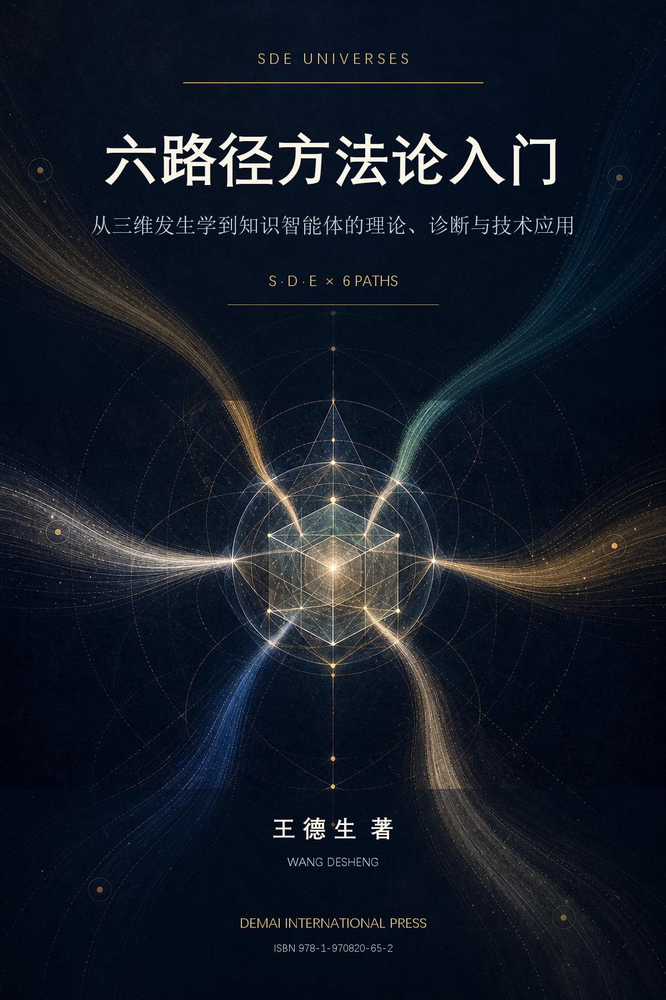

专著选读一
第三章 SDE本体论入门：发生的三维世界
六路径为何不是六种任意技巧？本章建立S、D、E三维底盘，说明显露、差异序列与特征纠缠为何必须共同进入一次完整发生。
阅读全文 →
六路径为何不是六种任意技巧？本章建立S、D、E三维底盘，说明显露、差异序列与特征纠缠为何必须共同进入一次完整发生。
阅读全文 →六路径如何从哲学框架变成智能体控制层？本章展开任务路由、路径锁定、交叉校正、证据审计与人工接管的完整工程流程。
阅读全文 →一套方法论必须写出自己可能失败的地方。本章正面处理形式完备与经验有效之间的距离，并规定撤销、收缩和修订条件。
阅读全文 →全书严格区分SDE本体论、三原理、六路径与三方程的四层责任，逐条说明六条路径的适用条件、转换机制、失败模式和修复办法；以任务特征向量组织选路与切换，并把教育、健康、商业、科研和人工智能纳入同一套可诊断、可审计的方法框架。
在技术部分，中华智问知识发生器被作为完整工程案例：任务识别、路径路由、路径锁定、分步校正、证据审计、多路径凝缩、人工接管与长期回写共同构成可追溯工作流。全书同时写入预注册实验、数据字典、安全门和失败条件，使理论不仅能够解释，也能够被比较、否定和修订。
王德生，计算数学博士，SDE发生学创立者，德麦国际创办人。早年从事网格生成、有限元与自适应算法研究，曾在中国科学院开展博士后研究，后任职英国斯旺西大学，并在新加坡南洋理工大学从事教学、科研与博士培养工作十三年。现于新加坡推进跨学科写作、SDE Universes与SDE智能体集群建设。